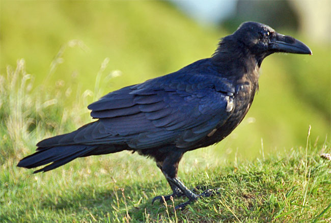
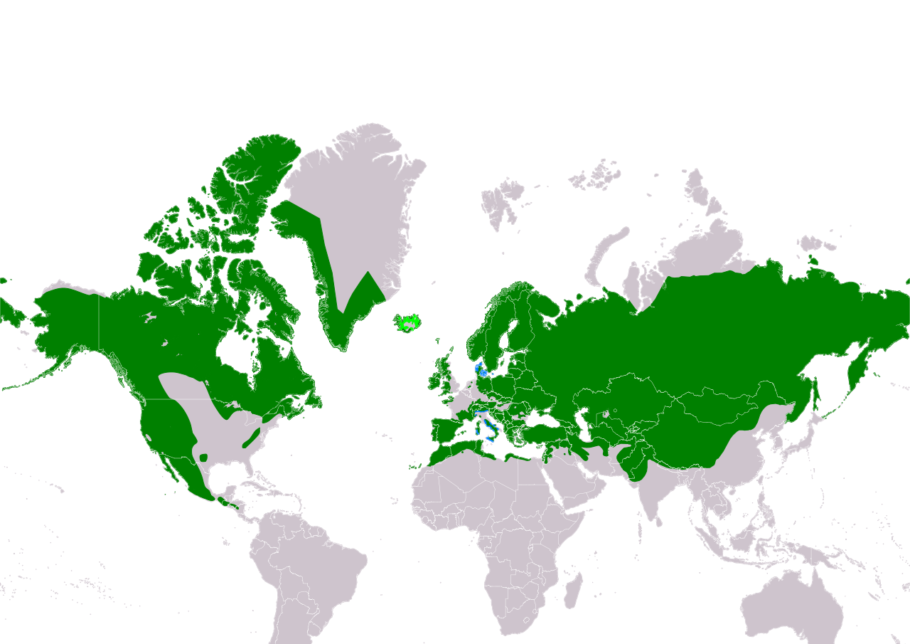

A holló vagy közönséges holló
(Corvus corax) a
madarak
(Aves)
osztályának
verébalakúak
(Passeriformes)
rendjébe, ezen belül a varjúfélék (Corvidae) családjába tartozó faj.
Földünk északi féltekéjén Ázsiától Észak-Amerikáig mindenütt
megtalálható, területileg a legelterjedtebb az összes varjúféle
között. 12 ismert alfaja létezik, melyek habár külalakjukban
kevésbé eltérőek egymástól, a korszerű genetikai kutatások
kimutatták, hogy jelentős genetikai különbségek vannak a különböző
populációk között.
A közönséges holló a vastagcsőrű
holló (Corvus crassirostris) mellett egyike a két legnagyobb
varjúfélének. A Földön valószínűleg a legnehezebb verébalakú madár
és egyben a legnagyobb termetű énekesmadár is. A felnőtt madár
hossza 56 és 70 centiméter körüli, testtömege 0,7 – 1,63
kilogrammig terjed.[1] Élettartamuk tipikusan 10-től 15 évig
terjed a szabadban, habár már érkeztek jelentések 40 év feletti
példányokról is. (A szóbeszéd szerint a hollók akár 100 évig is
élhetnek, bár ezt eddig bizonyítani nem sikerült.) A fiatal
madarak csapatokba verődhetnek, de a párválasztás után – ami egy
életre szól – a párok közösen védik a területüket.
A közönséges holló több ezer éve él együtt az emberrel. Olyannyira
alkalmazkodtak, hogy számos területen mint kártevőt tartják
nyilván őket. Alkalmazkodásának sikerességét mindenevő
életmódjának köszönheti. A természetben a legfőbb táplálékukat a
gabonamagvak, bogyók, gyümölcsök és apró állatok jelentik, de
hihetetlenül ügyesnek bizonyultak egyéb opportunista
táplálékszerzési módokban is. Minden alkalmat megragadnak a
táplálék megszerzésére, legyen az akár döglött állat, rovar vagy
konyhai hulladék.
A holló az egyik legintelligensebb madár a Földön, legalábbis erre
enged következtetni igen figyelemre méltó problémamegoldó
képessége és agyának madarak közt egyedülálló mérete. Évszázadok
óta témája a különböző mítoszoknak, a népi folklórnak, a
művészetnek és az irodalomnak. Sok országban, többek között a
skandináv államokban, Írországban, Walesben, Bhutánban – ahol a
holló az ország hivatalos madara – és Észak-Amerika északnyugati
partján a közönséges holló mitikus figuraként volt jelen vagy akár
istenként tisztelték (például Hugin és Munin).
A magyar holló szó ősi hangutánzó szó, amelyhez hasonlóan hangzik
a madár neve néhány más finnugor nyelven is: manysi nyelven kolah,
hanti nyelven kolak, szamojéd nyelven pedig hulli.[2]
Bár a holló név leggyakrabban a közönséges hollót
jelöli, a következő hat varjúfélét is hollónak nevezik: hawaii
holló (Corvus hawaiiensis), fehérnyakú holló (Corvus
cryptoleucus), barnanyakú holló (Corvus ruficollis), csutakfarkú
holló (Corvus rhipidurus), örvös holló (Corvus albicollis) és
vastagcsőrű holló (Corvus crassirostris).
A közönséges holló tudományos nevében a latin Corvus és a görög
koraksz (latinosan corax) szavak, a madár latin és görög neve
találhatók.
A közönséges holló egyike annak a számos fajnak, melyet eredetileg
még Carl von Linné figyelt meg és írt le 18. századi munkájában, a
Systema Naturae-ban. Tudományos nevét, a Corvus corax-ot azóta
viseli. A holló típusfaj, azaz olyan képviselője a Corvus nemnek,
amely a nemhez tartozó fajok legjellegzetesebb vonásaival
rendelkezik.
A közönséges holló legközelebbi rokonai az Afrikában őshonos
barnanyakú hollók (Corvus ruficollis) és az örvös hollók (Corvus
albicollis), míg Észak-Amerikából a fehérnyakú hollók (Corvus
cryptoleucus). A legfrissebb molekuláris analízis alapján az eddig
egynek hitt faj valójában két vagy több különböző fajra osztható.
A közönséges hollónak tizenkét jól elkülöníthető alfaja létezik:
Corvus corax corax – Európában keletre egészen a Bajkál-tóig, délre pedig a Kaukázuson át egészen Észak-Iránig megtalálható. Aránylag rövid és ívelt csőre van.
Corvus corax varius – Európától északnyugatra, Izlandon és Feröeren honos. Kevésbé fényes, mint a C. c. principalis vagy a C. c. corax. Ennek a középtermetű hollófajnak különös ismertetőjegye a helyenként fehér pettyes tollruha.
Corvus corax subcorax – Görögországtól egészen Északnyugat-Indiáig, Közép-Ázsiától a Himalája kivételével Nyugat-Kínáig fordul elő. Nagyobb testű, mint a „közönséges” corax, de szakálla annál kisebb. A tollazata általánosságban véve teljesen fekete, noha a nyaka és a begye néha a barnás árnyalatú, hasonlóan a barnanyakú hollóéhoz. (Ez a barnás árnyalat legfőképp a vedlés előtt álló madarakon figyelhető meg, akkor, amikor a tollruha már meglehetősen kopott.) A nyaki tollainak töve változatos színeket ölthet, de általában fehéres.
Corvus corax tingitanus – Észak-Afrikában és a Kanári-szigeteken honos. A Corvus corax tingitanus a legkisebb alfaj. A legrövidebb „szakállal” bír az összes holló között. Tollruhája határozottan megkülönböztethető más hollófajétól, ugyanis erősen olajos benyomást kelt. Csőre rövid, de vaskos; a felső csőrkáva erősen ívelt.
Corvus corax tibetanus – Kizárólag a Himalájában fordul elő. Ez a legnagyobb termetű, és a leghosszabb szakállú holló alfaj. A csőre hatalmas, de kevésbé impozáns, mint a Corvus corax principalis-é. A nyaki tollazatának töve szürkés.
Corvus corax kamtschaticus – Északkelet-Ázsiától egészen a Bajkál-tóig terjed; élettere emiatt kis részben közös az alapváltozatéval (C. c. corax). Testméretét tekintve valahol a C. c. principalis és a C. c. corax között helyezkedik el félúton. Csőre nagyobb és vaskosabb, mint a C. c. corax-é.
Corvus corax sinatus – Az USA középső és déli részén és Közép-Amerikában található meg ez az alfaj. Minden tekintetben kisebb, mint a C. c. principalis.
| Holló | |
|---|---|
|  | |
| A holló hangja | |
| Természetvédelmi státusz | |
| Nem fenyegetett | |
| Magyarországon védett | |
| Természetvédelmi érték: 50 000 F | |
| Rendszertani besorolás | |
| Ország: | Állatok (Animalia) |
| Törzs: | Gerinchúrosok (Chordata) |
| Altörzs: | Gerincesek (Vertevrata) |
| Tudományos név | |
| Corvus corax | |
| Linnaeus, 1758 | |
| Elterjedés | |
|  | |
| A holló elterjedési területe | |
| Hivatkozás | |
{kind=link}
{kind=link}